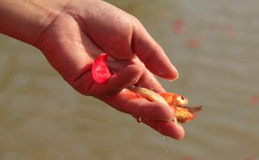

三月份从海口来到三亚时要找暂时栖身之处，联系朋友朋友回老家过年去了。正月三亚房租高得让人接受不了。因为着急，我就在网上联络了一个人她说有一间房月租1000，两人一起住怎么样我就相信了。去的时候她说她没带钱让我先交房租和压金随后再给我，我有2000块钱就一共交了1500。之后她就没回来，给她打电话她把事情推给房东，我才知道她和一人本来租了这个房子，现在她们要去公司住和房东阿姨商量了这个办法，因为不这样她们房费和压金都退不回来，就这样就被耍了一下。
要是以前我会觉得我很倒霉，我会诅咒她们。
房东阿姨看我没什么怨言就和我聊天，说她也不容易儿子得病一直住在医院里。我看她有好几间房子空着租不出去，她腿又不能走太多的路，就上网发布信息，只一星期时间房子就全部租出去了。还把一套大房子也一次性长年租去了，房东阿姨跟我说你住的房子对你来说有点贵，有一间小的房间本来我们老两口想住，你去住每月收你三百怎么样。阿姨把多余的房费和压金也都退给了我。
知道我放生信佛，阿姨就告诉我说他儿子去年买了两只野生鳖吃，自从吃了这两只鳖之后今年就开始得病不断发烧，医院查不出什么原因，北京也去了，中医也看了，而且他儿子以前也总下河用电炸鱼，脾气也不好。现在每天在医院打针，就是不断发烧，家里人都觉得这很邪。一听就知道这是累积的杀业果报成熟现前了。我想那两只苦命的鳖。有一天晚上我还梦见两只鳖，两只鳖告诉我它们被人活活把肉从上下壳中间挖出来，还让我看到了它们身后空空的壳。我想这件事我得去做，但是很难，佛说众生性情刚强难调。现在有很多甚至很多有
我开始跟阿姨说放生就能治好病，并告诉她我8年的眼病就是放生好的，刚开始她只是有一点相信，她也相信信佛的好处，但是如果真要去放生可能不会那么快，她有一个大儿子家里有什么事情都大多数由他做主或者听他的主意。那位大哥听了说不太相信，医生也说如果放生能好，医院都关门好了。他们的习气太重是开店的看重实实在在的利益，容浸在世俗的
要说这位阿姨也是有善根的，她也爱听我说放生的事情也爱听我讲一些
这样过了一个月，我已经不认为他们会去放生，我觉得我该说的已经说了，该做的已经做就靠他们自己的造化了。有一天房东阿姨又来我房间，她胖佗大，一坐在我床上我就感觉我的木头床开始下塌，我正在睡觉好容易有个休息日可以休息她又来向我诉说，叹气说：为什么我这样的年纪还要经受这些。我也不知道说什么好，也没热情了，我有气无力的说：阿姨去放生吧，这是唯一的一个有效的又积德的办法，把债还了就没事了。经过我平静的诉说她说：好去放生，她的大儿子也表示去放生，但是真的实际行动起来对于他们来说很容易的事情还是很难。这使我体会到人们的业障有多么坚固。这时我说：佛我已经尽力了，人们被世俗的压力紧迫着，很难放下眼前的期忘。
但是佛是全知，三千世界每个角落每粒尘土佛都尽收眼底，更何况我们修持行善的人们佛会看和真真切切。
当我觉得已尽力了，该做的都做了的时候，法力与智慧无边的佛出手了，佛真的出手了。
阿姨的大儿子更有善根他做些生意，家里还供佛，如果不经过我的时常劝说他心里不会种下这种善念，更不会促使他遇到机缘时自然的去行持，所以平时宣扬放生也是功德无量的。
放生得感应 话说有一天，大哥
那年有一天他开车在山里的路边停着车开着车门，这时他就眼看着从山里爬出一条大花蟒，眼看着花蟒爬进他的车里钻进座底下盘着，然后他看见从山里跑出几个人在追蟒，跑到车边那些人就拽蟒说把它杀了吃了，拽了几下没拽出来，大哥就说别拽了，我来弄吧。就把那几个人给劝走了，然后他关上车门忽啦啦的就向山里开去，他也不知道开了多久估计到了深山里就停下打开车门(他还给那蟒起了个名字叫“花花”)说：花花，这里安全了，他们追不上来了，你放心的走吧。那灵蟒很听话的从车座下钻出爬进山里走了，他就回家了。自从他放了那个蟒之后不久那个地方就成了开发地而且很繁华，他开店也一直很顺，我问他说：当时你不害怕，他说一点都不害怕。然后在桥边沉思说了一句：放下屠刀，立地成佛。这样就开启了他们一家人的善心，他的哥哥姐姐和家人们都开始信佛。
从此阿姨对佛更虔诚，他们本来平日专买活鱼杀，买活鳖，从此以后他们决定再也不吃活的了。习气从此收敛向好的方向发展。之后我就因为和一朋友在公司附近找了个房子就搬走了，后来过了一星期阿姨给我打电话说他儿子已经病情好转出院回家治疗了，后来那大哥又先后买彩票中了二千和一千多，说你大哥还要找你放生呢，我已经把